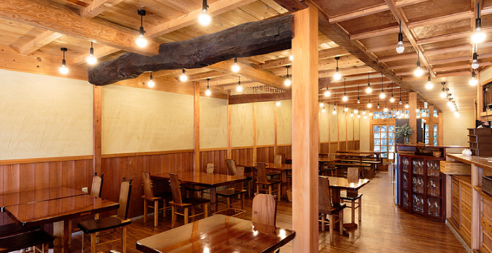
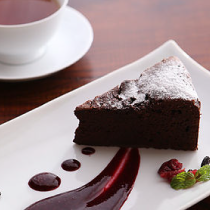
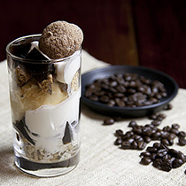
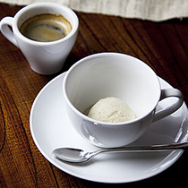
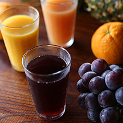

HOME
ABOUT
MENU
ACCESS


ガトーショコラ
Gateau chocolat
カカオの風味が香口当たり滑らかで濃厚なチョコレートケーキです。コーヒーにも、紅茶にも合います。
600yen（税込み）

コーヒーパフェ
Organic Coffe parfait
全て有機のコーヒーゼリー、生クリーム、豆乳アイス、ビスコッティ、グラノーラ。美味しさのコラボレーション！
800yen（税込み）
チョコラテ
Organic Cocoa
有機ココアを使用したラテです。酸味と苦味が少なくマイルドで上品な甘さと香りが人気です。
600yen（税込み）

豆乳アイスのアフォガート
Soy milk ice cream with Hot Espresso
冷たい豆乳アイスクリームに温かいエスプレッソをかけていただきます。
600yen（税込み）
チャイミルク
Organic Chai milk
有機茶葉とスパイス、そしてミルクを煮出して作ります。甘くてスパイシーなチャイは体が芯から温まります。
700yen（税込み）

フルーツジュース
Organic Fruit Juice
有機フルーツ果汁100%のフルーツジュースです。フルーツそのものの味が楽しめます。
600yen（税込み）
からだにやさしい食材を
美味しくいただく
あなたの暮らしを少しだけ楽しくする。
元気にする。幸せにする。いつも何か新しい発見がある。
そんなあなたの「健やかな未来」へのきっかけになりたい。
soilをそんな場にしていただければうれしいです。
cafe menu

からだにやさしい食材を
美味しくいただく
あなたの暮らしを少しだけ楽しくする。
元気にする。幸せにする。いつも何か新しい発見がある。
そんなあなたの「健やかな未来」へのきっかけになりたい。
soilをそんな場にしていただければうれしいです。